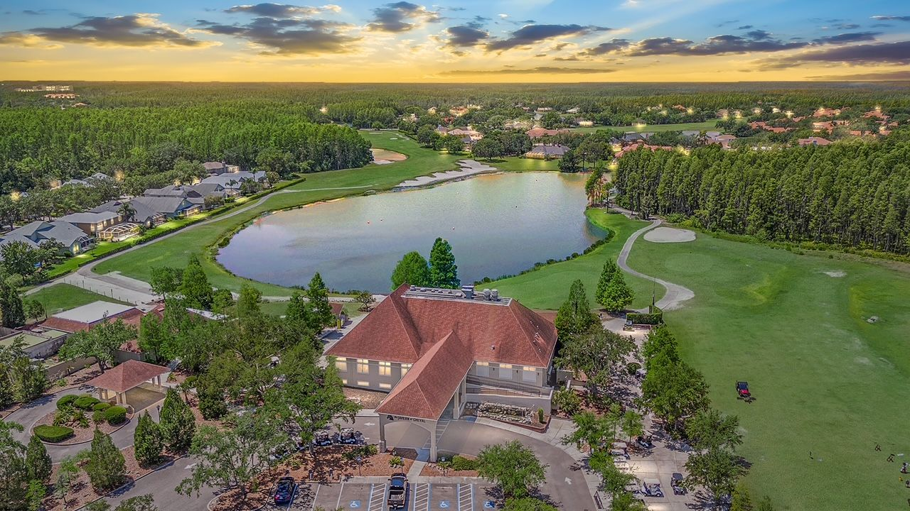
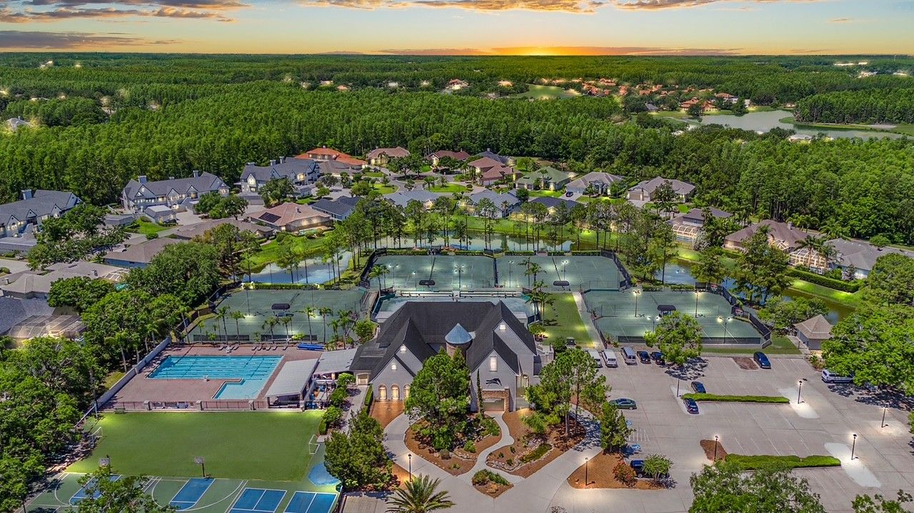

Tampa Bay's most distinguished gated country-club community — where championship golf, 24-hour security, and resort-style living come together just north of Tampa.
Experience Cheval
Cheval — Lutz, FL · Two Championship Golf Courses · 24/7 Gated Security · Homes from the Mid $400s to $2.5M+
Tucked just north of Tampa along Dale Mabry Highway and the Veterans Expressway, Cheval is one of the most recognized and coveted addresses in all of Tampa Bay. Established in the early 1990s, this master-planned gated community spans two distinct sides — Cheval East and Cheval West — united by a shared commitment to luxury, security, and an active country-club lifestyle.
What makes Cheval truly unique is that it isn't simply located near golf — it is built around it. Two championship courses wind throughout the community, creating some of the most spectacular home sites in the region: fairway-fronting estates, conservation-view retreats, lakeside residences, and custom homes tucked along serene cul-de-sacs.
If Cheval had a personality, it would be the one wearing a blazer at brunch and golf spikes by afternoon. Sophisticated enough for executives and luxury buyers, approachable enough for families who want A-rated schools and a real sense of community. Quite simply, there is nothing else like it in Tampa Bay.


Home to the Tournament Players Club of Tampa Bay, a world-class 18-hole public course winding through Cheval West. Designed by renowned golf architect Bobby Weed, TPC Tampa Bay is open to the public with membership opportunities available — making it one of Tampa Bay's most accessible premier golf experiences.
A private par-71 championship layout in Cheval East, designed by renowned golf architect Steve Smyers. Featuring water on most holes and stunning views of Lake Cheval, membership is required to play. Includes clubhouse dining, tennis, pool, and year-round social programming.
Tennis courts, an Olympic-size pool, a state-of-the-art fitness center, pickleball, youth summer camp programs, and The Tavern restaurant — all for members within the gates.
Three manned entry gates staffed around the clock — including roving security patrols — providing a level of safety and peace of mind rarely found in Tampa Bay residential communities.
Mature tree canopies, protected conservation areas, and shimmering lakes throughout the community create a natural, resort-like atmosphere that feels worlds away from the city.
One of Cheval's most distinctive features — an equestrian center that completes the community's full-lifestyle vision, adding a rare dimension of luxury amenities few communities can match.
The original Cheval enclave, Cheval East is characterized by established estates, mature landscaping, and the prestigious Club at Cheval. Home sites range from intimate conservation-view parcels to grand golf-front estates overlooking Lake Cheval.
Surrounding the legendary TPC Tampa Bay course, Cheval West offers a blend of villages from villas to executive homes to sprawling custom estates. The community's western side is known for its wide variety of price points and home styles, making it accessible to a broader range of luxury buyers.
An aerial perspective of Cheval's championship golf course reveals the breathtaking interplay of fairways, water features, and conservation areas that make this community one of Tampa Bay's most coveted addresses.
Cheval is zoned for one of Hillsborough County's most sought-after school feeder patterns — a significant draw for families relocating to the Tampa Bay area.
The Ward Team has called Cheval home since 2004. That's over two decades of living behind these same gates, watching this community grow, and helping neighbors — just like you — buy, sell, and find their perfect home within it.
As a multi-generational family team with Keller Williams Tampa Properties, we bring something no other team in this market can offer: the insider knowledge that only comes from truly living here, combined with the professional credentials, transaction experience, and family commitment to see every deal through with excellence.
Michael Ward's FSU degree in Real Estate & Appraisal means he understands exactly what golf course frontage, conservation views, and premium village locations are actually worth — not just what they're listed for. And Nancy's CLHMS designation ensures your luxury property is marketed at the highest possible level.
"Their knowledge of Cheval and the surrounding communities was especially valuable, and their guidance helped me make confident, well-informed decisions."
— Alicia & Parrish T., Cheval ClientsBrooklyn-born, Tampa Bay made. Jim's contract mastery and negotiation expertise have anchored The Ward Team's reputation for over 30 years. Cheval resident and proud Air Force veteran.
The heartbeat of every transaction. Nancy's CLHMS designation and meticulous attention to detail ensure luxury Cheval clients receive world-class service from contract to closing.
Cheval resident and FSU-educated real estate & appraisal specialist. Michael knows every village, every view, and exactly what your golf course home is worth. He's probably played the course this week.
Katie's creative talent drives The Ward Team's brand presence — ensuring Cheval listings are showcased beautifully across every platform to attract the right buyers.
Jim and Nancy Ward were extremely helpful when I purchased my new home in Oakstead in Land O' Lakes, FL. They made me feel like family and went above and beyond to make sure everything went smoothly. This is the third time I have worked with The Ward Team. I worked with them to buy a home in Cheval in Lutz, FL and also to sell that home a few years later. They will always be my Realtors.— Jean H. · Cheval Buyer & Seller · Lutz, FL
We've had the pleasure of working with The Ward Team on three separate real estate transactions, including buying and selling in the Cheval/Lutz FL area. Each experience has only deepened our appreciation for their professionalism, expertise, and genuine care.— Alicia & Parrish T. · Cheval, Lutz FL
When we decided to sell our home in Cheval, we knew immediately who to call. The Ward Team's knowledge of the community is unmatched — they knew exactly how to price our home, which buyers to target, and how to present the property to get top dollar. We had multiple offers within days. Truly the best in the business for Cheval.— M. & D. Rosario · Cheval East Seller · Lutz, FL
We relocated from out of state and had never heard of Cheval before Nancy introduced us to it. After one tour, we knew it was exactly what we were looking for. Nancy's insider knowledge — knowing which lots had the best views, which villages had the most active social scene — made all the difference. We couldn't be happier with our home or our experience.— The Harrington Family · Cheval West Buyer · Lutz, FL
Ready to experience the difference? Let's talk.
Search for Homes in ChevalWhether you're thinking about selling your Cheval home, searching for the perfect property inside the gates, or simply curious about what your home is worth in today's market — we'd love to connect. No pressure. Just an honest conversation with people who know this community as well as you do.
The Insider Advantage
Any agent can pull a Cheval listing. But only The Ward Team can tell you which fairway-front lots flood in summer, which cul-de-sacs command a premium at resale, and which villages are quietly appreciating faster than the rest. That's not research — that's two decades of living, selling, and raising a family inside these gates.
Nancy Ward and The Ward Team have called Cheval home for over 20 years. They know the community from the inside out — not from a data sheet.
Over 20 years of selling homes in Cheval across every village — from The Estates to Cheval West. Sellers consistently achieve above-average list-to-sale ratios. Buyers gain access to off-market opportunities before they're publicly listed.
From The Estates to Cheval West, from Beauvais to Wimbledon — The Ward Team has sold in every corner of Cheval and can pinpoint exactly where your next chapter should begin.
Two decades of relationships with Cheval homeowners, HOA leadership, and club members means The Ward Team often knows about homes before they hit the market — giving their buyers a critical first-mover advantage.
Professional photography, cinematic drone video, targeted digital campaigns, and a curated buyer database. Your Cheval home deserves marketing that matches its prestige.
As part of Keller Williams Tampa Properties — the #1 real estate franchise in the world by agent count — The Ward Team combines local expertise with global reach and cutting-edge technology.
Whether you're buying your first home inside the gates or selling the estate you've built over decades — The Ward Team is ready. No pressure. Just honest, expert guidance from people who truly know Cheval.
Common Questions
The Ward Team with Keller Williams Tampa Properties is widely recognized as the leading real estate team specializing in Cheval. Nancy Ward and her team have lived inside the Cheval gates since 2004, giving them an unmatched insider perspective that no outside agent can replicate. They have represented buyers and sellers across every village in Cheval — from The Estates and Chateau Loire to Wimbledon at Cheval and Cheval West Estates — and have an intimate knowledge of which homes offer the best value, which lots carry premium views, and how to negotiate effectively in this competitive gated community. When you work with The Ward Team, you are not hiring an agent who looked up Cheval on Zillow — you are hiring your neighbors.
Cheval stands apart because it is the only community in the Tampa Bay area that combines two championship golf courses — the private par-71 Club at Cheval (designed by Steve Smyers) and the public TPC Tampa Bay (designed by Bobby Weed) — with 24-hour manned gate security, A-rated Hillsborough County schools, and the full-service Cheval Athletic Club featuring an Olympic pool, 9 Har-Tru tennis courts, pickleball, and a 24/7 fitness center. Homes range from the mid $400s to over $2.5 million, spanning conservation views, lakefront lots, and golf-front estates. Located just north of Tampa at the intersection of Dale Mabry Highway and the Veterans Expressway, Cheval offers luxury country-club living with easy access to everything Tampa Bay has to offer.
Homes in Cheval range from approximately the mid $400,000s to over $2.5 million, depending on the village, lot type, and home size. Entry-level condominiums and townhomes (such as Wimbledon at Cheval) start in the mid $400s, while single-family homes in established villages like The Estates, Beauvais, and Chateau Loire typically range from $700,000 to $1.5 million. The most exclusive golf-front and lakefront estates in Cheval West can exceed $2 million. The Ward Team can provide a current market analysis and identify the best opportunities at any price point within the community.
Selling a home in a gated community like Cheval requires more than a standard MLS listing. The Ward Team brings three critical advantages: (1) Insider knowledge — as Cheval residents since 2004, they know every street, every view, and every nuance that adds value to a home. (2) A proven buyer network — their years of community involvement means they often know buyers before a home even hits the market, enabling faster sales and stronger offers. (3) Luxury marketing expertise — from professional photography and cinematic video tours to targeted digital campaigns, The Ward Team presents Cheval properties in a way that attracts qualified, motivated buyers. The result is a smoother transaction, less time on market, and more money in your pocket.
Cheval is divided into two main sides — Cheval East (home of The Club at Cheval private golf course) and Cheval West (home of TPC Tampa Bay public course). Within these, there are numerous distinct villages including: The Estates at Cheval, Village of Beauvais, Chateau Loire, Wimbledon at Cheval (condominiums), Cheval West Estates, Lake Cheval, and several others. Each village has its own character, architectural style, and price range. The Ward Team has sold homes in virtually every village and can help you identify which neighborhood best fits your lifestyle and budget.
Cheval is an exceptional community for families. The community is zoned for A-rated Hillsborough County schools, including McKitrick Elementary, Martinez Middle School, and Steinbrenner High School — consistently ranked among the top schools in the Tampa Bay region. The gated, 24-hour security environment provides peace of mind for parents, while the Cheval Athletic Club's pool, tennis courts, and fitness facilities give children and teens a safe, active lifestyle. The community's conservation areas and lakes also provide a natural, wildlife-rich environment that families love.